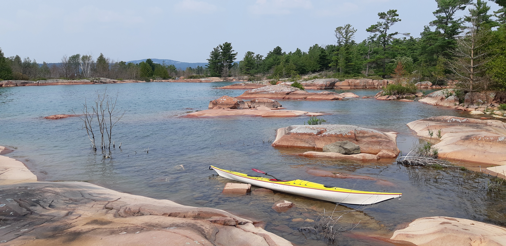

The First Glimpse
My first visit was supposed to be about Phillip Edward Island.
Because I was still inexperienced and knew very little about the region, I parked at a public beach, loaded my kayak, and decided to simply follow the shoreline. My thinking was that I could paddle far enough along the coast to eventually reach Phillip Edward Island, cross the remaining stretch of water, and explore from there.
It was not exactly a sophisticated expedition plan.
It was also not particularly successful.
I never reached Phillip Edward Island that day. Instead, I received my first real introduction to the landscape that makes Georgian Bay and Northern Ontario so extraordinary.

Somewhere along the way, I saw something I had never seen before.
Far in the distance, rising above the landscape, was what appeared to be a rocky mountain cliff.
I had hiked through the Laurentians, the Green Mountains of Vermont, the Adirondacks, and other parts of the northeastern wilderness. I had seen plenty of mountains.
This looked different.
From that distance, it barely looked like rock at all.
It looked more like a precious stone — a distant gem catching the light, or perhaps some enormous treasure sitting on the horizon.
I remember staring at it and wanting desperately to get closer.
I wanted to know what I was looking at. I wanted to paddle toward it, get closer, and understand how something that appeared so strange could rise from the landscape so far away.

But I was already running behind schedule, and I had learned enough by then to know that distances on a map and distances on the water are two very different things. Crossing open water simply because something looks close is exactly the kind of decision that can turn an enjoyable paddle into a very bad day.
My plans were already questionable enough.
The mountain would have to wait.
Perhaps I would see it on another trip.
Perhaps I would come back for it someday.
I didn't yet realize that I had just discovered the beginning of something that would become one of my favourite places to paddle.